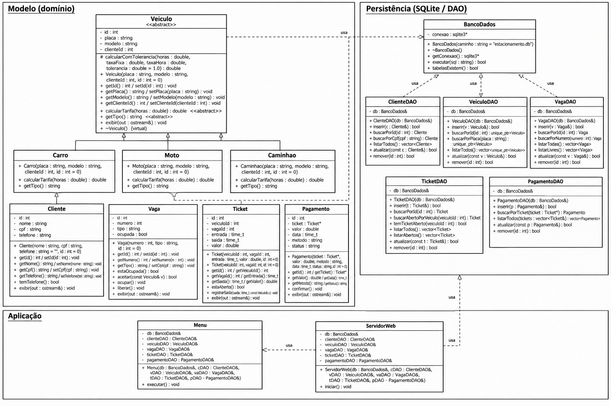

Sistema de Administração e Controle de Estacionamento
CIN0135 - Estruturas de Dados Orientadas a Objetos - Centro de Informática-UFPE
Integrantes / Login
- Arthur Guerra Laranjeira Salazar / agls
- João Pedro Monteiro da Cunha Santos / jpmcs
- Lucas Veloso Moura Pereira / lvmp
- Matheus de Assis Lins / mal5
Links
- Código: github.com/lvmp15/Projeto-EDOO
- Vídeo de apresentação: [link do video]
O que o sistema faz
É um programa em C++ que controla um estacionamento. Ele cadastra clientes, veículos (carro, moto ou caminhão) e vagas. Quando um veículo chega, o sistema procura uma vaga livre do mesmo tipo e abre um ticket. Na saída, calcula a tarifa pelo tipo do veículo e pelo tempo de permanência, registra o pagamento e libera a vaga. Tudo fica salvo num banco SQLite. O sistema pode ser usado por um menu no terminal ou por uma interface no navegador.
Funcionalidades
- Cadastrar, alterar, consultar e excluir clientes, veículos e vagas.
- Registrar a entrada pela placa, com a vaga escolhida automaticamente pelo tipo do veículo.
- Registrar a saída, com cálculo da tarifa e pagamento em dinheiro, cartão ou Pix.
- Consultar vagas (todas, livres ou ocupadas), tickets abertos e pagamentos, com o total arrecadado.
- Validar CPF, telefone e placa (formato antigo e Mercosul) antes de gravar.
- Gravar entrada e saída numa transação: ticket, vaga e pagamento são salvos juntos ou nada é salvo.
A tarifa tem uma taxa fixa que cobre a primeira hora. Depois disso soma a taxa por hora, proporcional ao tempo:
- Carro: R$ 10,00 + R$ 2,50 por hora a mais
- Moto: R$ 5,00 + R$ 1,50 por hora a mais
- Caminhão: R$ 15,00 + R$ 5,00 por hora a mais
Conceitos de orientação a objetos
Esta seção mostra cada conceito e onde ele está no código. Os trechos foram copiados do projeto.
Herança e classe abstrata
Veiculo é a classe base de Carro, Moto e Caminhao.
Ela guarda o que todo veículo tem (id, placa, modelo e dono) e declara dois métodos virtuais puros:
calcularTarifa e getTipo. Por causa do = 0, Veiculo é abstrata
e não dá para criar um objeto dela direto.
include/Veiculo.h
// o "= 0" obriga cada filha a ter a sua versao, e e isso que deixa Veiculo abstrata
virtual double calcularTarifa(double horas) const = 0;
virtual string getTipo() const = 0;
Cada filha implementa os dois métodos com override. A conta da tarifa é igual para os três tipos e
só muda a taxa, então ela fica num método protected da base, calcularComTolerancia, que só
as filhas podem chamar:
src/Carro.cpp
double Carro::calcularTarifa(double horas) const{
return calcularComTolerancia(horas, taxaFixa, taxaHoraCarro);
}Polimorfismo
O polimorfismo aparece em dois lugares diferentes.
1. Cálculo da tarifa. Ticket::registrarSaida recebe um const Veiculo&
e chama calcularTarifa. O ticket não sabe se é carro, moto ou caminhão. Como o método é virtual,
em tempo de execução é chamada a versão da classe certa.
src/Ticket.cpp
void Ticket::registrarSaida(time_t saida, const Veiculo& veiculo) {
...
this->saida = saida;
double horas = difftime(saida, entrada) / 3600.0;
valor = veiculo.calcularTarifa(horas);
}
2. Busca de vaga livre. Em Menu::registrarEntrada, o veículo vem do banco como
unique_ptr<Veiculo>. O laço percorre as vagas livres e pergunta a cada uma se ela aceita o veículo,
sem saber o tipo dele:
src/Menu.cpp
// o laco nao sabe se e Carro, Moto ou Caminhao, so pergunta se a vaga aceita
for (unsigned int i = 0; i < livres.size(); i++)
{
if (livres[i].aceita(*veiculo))
Dentro de Vaga::aceita, a chamada veiculo.getTipo() é virtual e devolve "Carro", "Moto" ou
"Caminhao" conforme o objeto real. A interface web usa o mesmo aceita em
ServidorWeb::alocarVeiculo.
src/Vaga.cpp
bool Vaga::aceita(const Veiculo& veiculo) const
{
return tipo == veiculo.getTipo();
}
O operator<< de Veiculo também é polimórfico: ele chama o exibir virtual,
que usa o getTipo() da classe filha.
Encapsulamento
Os atributos de todas as classes de domínio são private. A única forma de mudar um valor é pelos setters,
e os setters validam antes de gravar. Os construtores também chamam os setters, então um objeto com placa, CPF ou tipo
de vaga inválido nem chega a ser criado: o setter lança invalid_argument antes.
Veiculo::setPlacatira traço e espaço, deixa em maiúsculo e só aceita os formatos ABC1234 e ABC1D23 (conferidos pelo método privadoformatoValido).Cliente::setCpftira ponto, hífen e espaço e só aceita 11 dígitos.Vaga::setTiponormaliza a escrita ("CARRO" vira "Carro") e só aceita Carro, Moto ou Caminhao.Vaganão tem setter paraocupada. O estado só muda porocupar()eliberar(), que lançam erro se a vaga já estiver ocupada ou já estiver livre.
src/Veiculo.cpp
if (!formatoValido(limpa))
{
throw invalid_argument("Placa invalida: " + placa);
}
this->placa = limpa;Ponteiros e referências
Como Veiculo é abstrata, o VeiculoDAO não consegue devolver um Veiculo por valor.
Ele lê a coluna tipo do banco, cria o objeto da classe certa com new e devolve um
unique_ptr<Veiculo>. O unique_ptr é dono do objeto e chama o delete sozinho.
src/VeiculoDAO.cpp, método montarVeiculo
if (tipo == "Carro")
{
return unique_ptr<Veiculo>(new Carro(placa, modelo, clienteId, id));
}
Esse delete é feito pelo ponteiro da classe base. Por isso o destrutor de Veiculo é virtual:
sem isso, apagar um Carro por um ponteiro de Veiculo não chamaria o destrutor certo.
include/Veiculo.h
// virtual pq o unique_ptr<Veiculo> do DAO apaga Carro, Moto e Caminhao pelo ponteiro da base
virtual ~Veiculo();Outros usos no projeto:
Pagamentoguarda umTicket*. É um ponteiro sem posse: o pagamento só aponta para o ticket e não fazdelete.- O
Menue os cinco DAOs recebem oBancoDadospor referência (BancoDados&), então todos usam a mesma conexão sem copiar nada. - Em
Menu::registrarEntrada,Vaga& vaga = livres[posicao]faz oocupar()mudar a vaga do próprio vetor, sem cópia.
RAII no BancoDados
A classe BancoDados é dona da conexão com o SQLite. O construtor abre a conexão e o destrutor fecha.
No main, o objeto é criado dentro de um try. Quando o programa sai do bloco, mesmo por
causa de uma exceção, o destrutor roda e a conexão é fechada.
A cópia é proibida com = delete. Se fosse permitida, duas cópias teriam o mesmo ponteiro e a conexão
seria fechada duas vezes.
include/BancoDados.h
BancoDados(const string& caminho = "estacionamento.db");
~BancoDados();
BancoDados(const BancoDados& outro) = delete;
BancoDados& operator=(const BancoDados& outro) = delete;Tratamento de exceções
As classes de domínio lançam invalid_argument com uma mensagem legível (por exemplo, "CPF invalido").
Os DAOs lançam runtime_error quando o banco falha. O Menu::executarOpcao captura as duas:
a operação atual é cancelada, a mensagem aparece na tela e o programa volta para o menu sem fechar.
Arquitetura
O código é dividido em três camadas, e o banco fica no fim delas.
Classes de domínio
Veiculo(abstrata), com as filhasCarro,MotoeCaminhao.Cliente: dono dos veículos.Vaga: número, tipo e se está ocupada.Ticket: entrada e saída de um veículo numa vaga, e o valor cobrado.Pagamento: valor, data e método de pagamento de um ticket fechado.
Essas classes guardam os dados e fazem as validações. Nenhuma delas sabe que existe banco de dados.
Camada DAO
São cinco classes, uma por tabela: ClienteDAO, VeiculoDAO, VagaDAO,
TicketDAO e PagamentoDAO. Cada uma tem os métodos de inserir, buscar, listar,
atualizar e remover. Todo SQL que lê ou grava nas tabelas fica nelas.
BancoDados
Abre e fecha a conexão, liga as chaves estrangeiras (PRAGMA foreign_keys = ON) e confere se as
tabelas existem antes do programa começar. Os DAOs só pegam a conexão emprestada.
Quem usa as camadas
O Menu (terminal) e o ServidorWeb (navegador) conversam com os DAOs. O único SQL que eles
mandam direto é o de transação (BEGIN, COMMIT e ROLLBACK), pelo
BancoDados.
Banco SQLite
As tabelas são criadas pelo sql/schema.sql:
cliente: nome, CPF (único) e telefone opcional.veiculo: placa (única), modelo, tipo e o cliente dono.vaga: número (único), tipo e se está ocupada (0 ou 1).ticket: veículo, vaga, entrada, saída e valor. Saída nula quer dizer que o veículo ainda está no estacionamento.pagamento: ticket, valor, data, método e status. Cada ticket tem no máximo um pagamento.
As chaves estrangeiras impedem, por exemplo, excluir um cliente que ainda tem veículo, ou um veículo que já tem ticket.
Os CHECK do banco repetem as regras das classes (tipos válidos, saída depois da entrada, valor não negativo).
Diagrama de classes

Interface web
Além do menu no terminal, o programa tem uma interface no navegador, na pasta frontend/.
Ela é aberta com estacionamento web. O lado C++ é a classe ServidorWeb, que usa a biblioteca
cpp-httplib e responde em localhost:8080. Ela usa os mesmos DAOs e as mesmas classes de domínio do menu,
então as validações e o cálculo da tarifa são os mesmos.
A tela mostra o pátio com as vagas. Dá para cadastrar cliente, veículo e vaga, remover uma vaga livre, escolher o veículo de cada vaga e registrar a saída com o pagamento. Enquanto o veículo está estacionado, a vaga mostra a permanência e o valor até aquele momento.